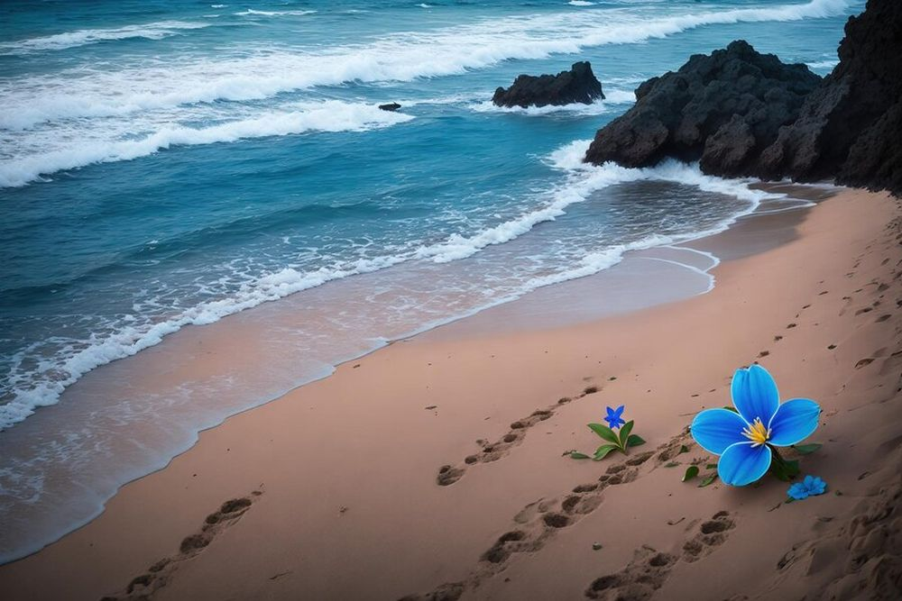

Descoperă Tenerife - Bijuteria Insulelor Canare
Tenerife este cea mai mare insulă din arhipelagul Canare, oferind o varietate de atracții naturale și culturale pentru vizitatori:
-

Vulcanul Teide - Punct de reper natural
Acest vulcan imens este punctul cel mai înalt din Spania și oferă priveliști impresionante asupra insulei și mării.
-

Plaje spectaculoase - Relaxare și aventură
Insula are plaje variate, de la nisipuri aurii la zone pentru surfing și sporturi nautice.
-

Loro Parque - Parc de animale și distracții
Acest parc oferă oportunități de a vedea delfini, păsări exotice și multe alte animale într-un mediu captivant.
-

Santa Cruz de Tenerife - Oraș portuar vibrant
Explorați capitala insulei cu clădiri istorice, muzee și un mediu urban animat.
-

Carnavalul - Festivalul animat
Tenerife este faimos pentru carnavalul său vibrant, cu parade, muzică și distracție.
Concluzii
Tenerife este o destinație versatilă, oferind peisaje naturale uluitoare și experiențe culturale memorabile.